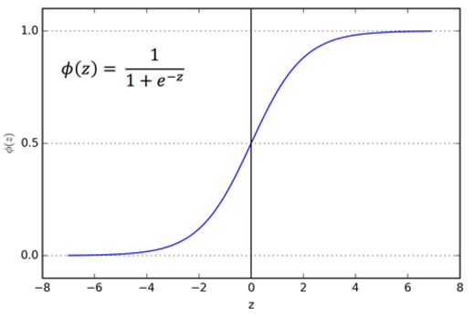

Sigmoid Function

The function is often called the sigmoid or logistic function. It is called the sigmoid because it is S-shaped. This function can be seen as squashing the value of its argument onto the range (0,1). This grants several useful properties. First, the sigmoid approaches the values of the class labels, 0 and 1. Second, the sigmoid’s output can be interpreted as a probability, which we will use to make predictions. One should think of the argument to the sigmoid function as a sort of signed “evidence,” for one class or the other. Specifically, if the input to the sigmoid is very far from zero, then the value of the sigmoid will be close to 1 or 0. If the input is positive, the output will be closer to 1, and if the input is negative, then the output will be closer to 0. These two facts are key. The sigmoid will be used as the final step in predicting classes from a datapoint, and combining the two facts, we see that the magnitude and sign of the input determine the predicted confidence, and class of our model, respectively.